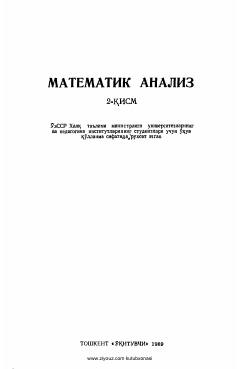

MAOliy o'quv yurtlari talabalari uchun matematika fanidan o'quv qo'llanma.
Ushbu o'quv qo'llanma universitetlar va pedagogika institutlari hamda oliy texnika o'quv yurtlari talabalari uchun mo'ljallangan. Kitobda ko'p o'zgaruvchili funksiyalar differensial hisobi, funksional qatorlar nazariyasi va Fure qatorlari batafsil bayon etilgan.